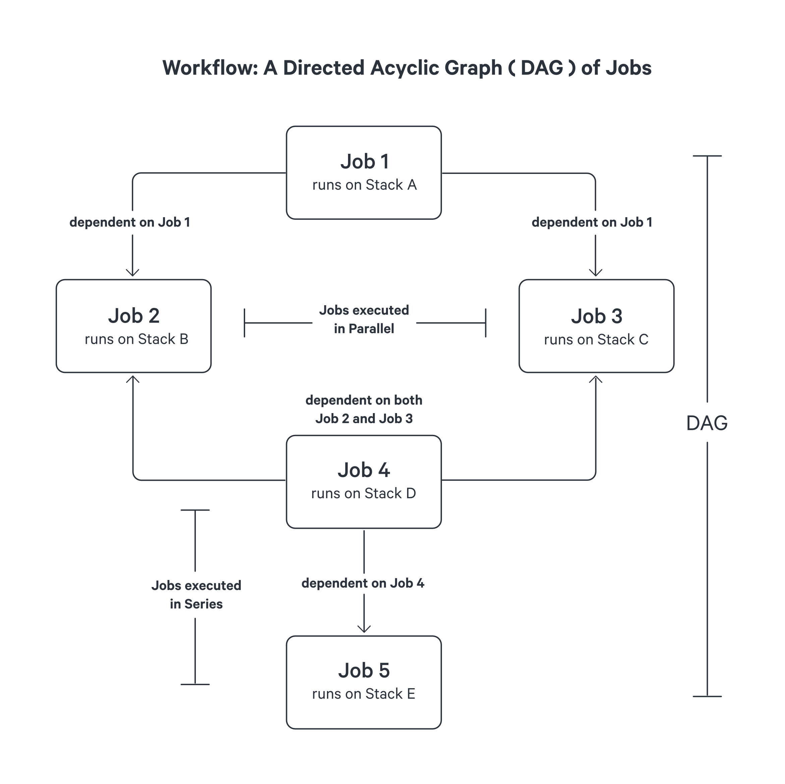
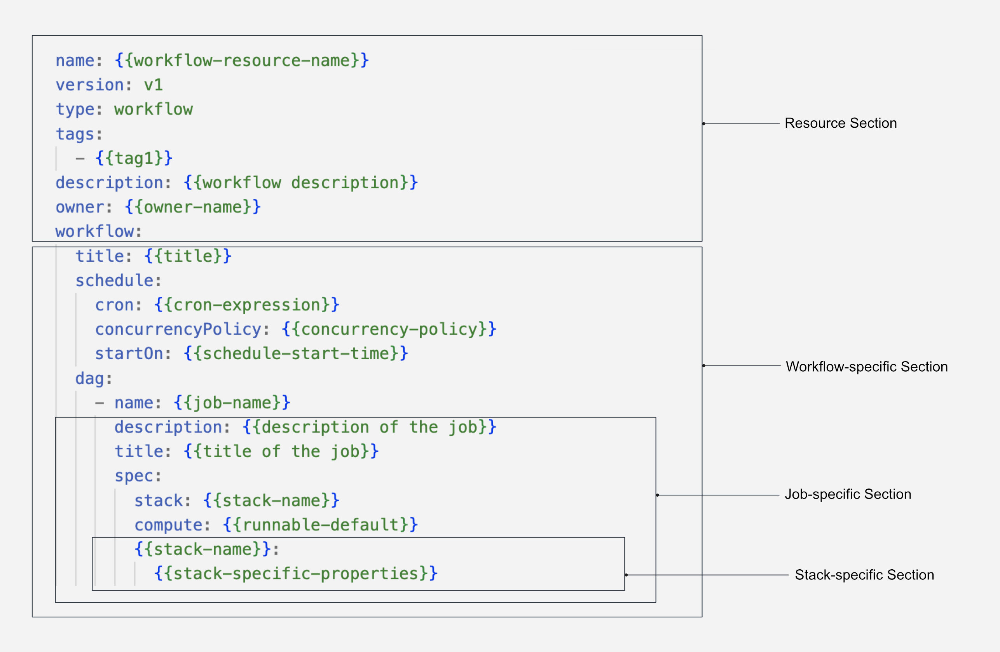

Workflow¶
The Workflow in DataOS serves as a Resource for orchestrating data processing tasks with dependencies. It enables the creation of complex data workflows by defining a hierarchy based on a dependency mechanism.
Workflow and Directed Acyclic Graph (DAG)¶
In DataOS, a Workflow represents a Directed Acyclic Graph (DAG), where jobs are represented as nodes, and dependencies between jobs are represented as directed edges. The DAG structure provides a visual representation of the sequence and interdependencies of jobs within a Workflow. This facilitates efficient job execution by enabling parallel and sequential processing based on job dependencies.
Within a Workflow, a job encompasses a series of processing tasks, each executed within its dedicated Kubernetes Pod. This architectural design ensures that the computational workload of one job does not hinder the performance of others, effectively avoiding bottlenecks.
Furthermore, every job within a Directed Acyclic Graph (DAG) is associated with a specific Stack. A Stack serves as an extension point within a job, offering users the ability to leverage different programming paradigms based on their specific requirements. For instance, if your objective involves data transformation, ingestion, or syndication, utilizing the Flare Stack is recommended. DataOS provides a diverse range of pre-built stacks, including Flare, Scanner and more, enabling developers to seamlessly adopt various programming environments to suit their needs.

In the above illustration, Job 1 is the first job to be executed as it has no dependencies. Once Job 1 completes, both Job 2 and Job 3 can run concurrently or parallely. Only after the successful completion of both Job 2 and Job 3, Job 4 becomes eligible for execution. Finally, Job 5 can be executed sequentially after Job 4 successfully finishes. This hierarchical structure ensures optimal job execution without creating bottlenecks.
Types of Workflow¶
A Workflow in DataOS can be categorized as either single-run or scheduled workflow.
Single-run Workflow¶
Single-run Workflow represent a one-time execution of a sequence of jobs. These workflows do not include scheduling attributes and rely solely on the defined DAG structure and job dependencies. To explore a case scenario for a single-run Workflow, refer to the link: How to implement Single-run Workflow?
Scheduled Workflow¶
Scheduled Workflow enable the automated and recurring execution of jobs based on specified intervals or predetermined times. To schedule a Workflow, the schedule section or mapping along with the scheduling attributes must be added to the Workflow YAML configuration. Scheduled Workflow provide a powerful mechanism for automating job execution based on a cron expression. To explore a case scenario for a Scheduled Workflow, refer to the link: How to run a Cron or a Scheduled Workflow?
Structure of a Workflow YAML¶
The Workflow Resource is defined using a YAML configuration file. The following example illustrates the structure for defining a Single-run Workflow:

The above sample YAML illustrates a scheduled Workflow with a single job. Multiple jobs or nested workflows can be specified within a Workflow DAG and correct execution order is specfied using dependencies. Jobs can also be retried by specifying retry strategies. Each job within the DAG is defined with a unique job name, job spec, Stack Resource name and version, Compute Resource name, Stack-specific attributes, and various other optional attributes.
For a comprehensive reference of various attributes and their configurations, please consult the Attributes of Workflow YAML.
How to Create a Workflow?¶
To create a Workflow Resource, you need to configure the attributes of various sections within a Workflow YAML. The sections are provided below:
Each of these sections are mappings and comprise several section-specific attributes. The subsequent parts provide details on the necessary configurations.
Workflow YAML Configuration¶
Configure the Resource Section¶
A Workflow is a Resource-type in DataOS. The Resource section of the YAML configuration file consists of attributes that are common across all resource-types. The following YAML snippet demonstrates the attributes that need to be declared in this section:
name: {{my-workflow}}
version: v1
type: workflow
tags:
- {{dataos:type:resource}}
- {{dataos:type:workspace-resource}}
- {{dataos:resource:workflow}}
description: {{This is a sample workflow YAML configuration}}
owner: {{iamgroot}}
workflow: # Workflow-specific Section
{{Attributes of Workflow-specific Section}}
For more details regarding the attributes of Resource section, refer to the link: Attributes of Resource section.
Configure the Workflow-specific Section¶
The Workflow-specific section contains configurations specific to the Workflow Resource. DataOS supports two types of Workflows: single-run and scheduled Workflow, each with its own YAML syntax.
Single-Run Workflow YAML configuration
A Single-run Workflow executes only once. It does not include a schedule section. The YAML configuration for a single-run Workflow is as follows:
workflow:
dag:
{{list-of-jobs}}
Scheduled Workflow YAML configuration
A Scheduled Workflow triggers a series of jobs or tasks at particular intervals or predetermined times. To create a scheduled Workflow, specify the attributes in the schedule section, in the following format:
workflow:
schedule:
cron: {{'/10 * * * *'}}
dag:
{{list-of-jobs}}
Additional, optional attributes of the schedule section are elaborated on the Attributes of Schedule Section.
The below table summarizes various attributes within the Workflow-specific section.
| Attribute | Data Type | Default Value | Possible Value | Requirement |
|---|---|---|---|---|
workflow |
mapping | none | none | mandatory |
schedule |
mapping | none | none | optional** |
cron |
string | none | any valid cron expression. | optional** |
concurrencyPolicy |
string | Allow | Allow/Forbid/Replace | optional |
startOn |
string | none | any time provided in ISO 8601 format. | optional |
endOn |
string | none | any time provided in ISO 8601 format. | optional |
completeOn |
string | none | any time provided in ISO 8601 format. | optional |
title |
string | none | any valid string | optional |
optional**: Attributes optional for a Single-run Workflow, but mandatory for a Scheduled Workflow.
For additional details about the attributes of the Workflow-specific section, refer to the link: Attributes of Workflow-specific section.
Configure the Job-specific Section¶
A Directed Acyclic Graph (DAG) represents the sequence and dependencies between various jobs within the Workflow. A DAG must contain at least one job.
Job
A Job denotes a single processing task. Multiple jobs within a DAG can be linked sequentially or concurrently to achieve a specific result through dependencies. Here is an example YAML syntax for two jobs linked by dependencies:
dag:
- name: {{job1 name}}
spec:
stack: {{stack1:version}}
compute: {{compute name}}
resources:
requests:
cpu: {{requested cpu}}
memory: {{requested memory}}
limits:
cpu: {{cpu limits}}
memory: {{memory limits}}
stack1:
{{stack1 specific attributes}}
- name: {{job2-name}}
spec:
stack: {{stack2:version}}
compute: {{compute name}}
stack2:
{{stack2 specific configuration}}
dependencies:
- {{job1-name}}
Further, jobs can be retried automatically by pre-defining the retry strategy within the Workflow YAML. This could be helpful in case of job failures or unexpected errors. Learn about job retries by navigating to the following link: How to retry failed jobs within a Workflow?
The below table summarizes various attributes of the Job-specific section.
| Attribute | Data Type | Default Value | Possible Value | Requirement |
|---|---|---|---|---|
name |
string | none | any string confirming the regex [a-z0-9]([-a-z0-9]*[a-z0-9]) and lengthless than or equal to 48 characters |
mandatory |
title |
string | none | any string | optional |
description |
string | none | any string | optional |
spec |
mapping | none | none | mandatory |
runAsUser |
string | userID of the user | userID of the Use Case Assignee |
optional |
compute |
string | none | runnable-default or any other custom Compute Resource |
mandatory |
resources |
mapping | none | none | optional |
requests |
mapping | none | none | optional |
limits |
mapping | none | none | optional |
cpu |
string | requests: 100m, limits: 400m | cpu units in milliCPU(m) or cpu core | optional |
memory |
string | requests: 100Mi, limits: 400Mi | memory in Mebibytes(Mi) or Gibibytes(Gi) | optional |
stack |
string | none | flare/toolbox/scanner/ alpha |
mandatory |
retry |
mapping | none | none | optional |
count |
integer | none | any positive integer | optional |
strategy |
string | none | Always/OnFailure/ OnError/OnTransientError |
optional |
dependency |
string | none | any job name within the Workflow | optional |
For additional details about attributes of the Job-specific section, refer to the Attributes of Job-specific section.
Configure the Stack-specific Section¶
The Stack-specific Section allows you to specify the desired Stack for executing your Workflow. Depending on your requirements, you can choose from the following supported Stacks:
-
Flare Stack: The Flare stack provides advanced capabilities for data processing and analysis.
-
Alpha Stack: The Alpha stack offers a powerful environment for hosting web-application, and custom Docker images atop DataOS.
-
Data Toolbox Stack: The Data Toolbox stack provides a set of utilities for Depots storing Iceberg datasets, for e.g. Icebase.
-
Scanner Stack: The Scanner Stack provides metadata ingestion capabilities from a source.
For more detailed instructions on setting up and customizing the Stack-specific Section attributes according to your needs, refer to the respective documentation of Flare, Alpha, Data Toolbox, Scanner Stack. Each Stack has its unique attributes that can enhance the functionality of your job.
Click here to view a sample Workflow YAML configuration
The sample Workflow code snippet provide below consists of a single job that leverages the Flare Stack for transforming data read from the Icebase Depot and storing it in thethirdparty01 Depot.
Code Snippet
# Resource Section
name: abfss-write-avro
version: v1
type: workflow
tags:
- Connect
- City
description: This workflow reads data from Icebase depot and stores it in thirdparty depot.
# Workflow-specific Section
workflow:
title: Connect City avro
dag:
# Job-specific Section
- name: city-abfss-write-avro
title: City Dimension Ingester
description: The job ingests data from Icebase to thirdparty depot.
spec:
tags:
- Connect
- City
stack: flare:4.0
compute: runnable-default
# Stack-specific Section
flare:
job:
explain: true
inputs:
- name: city_connect
dataset: dataos://icebase:retail/city
format: iceberg
logLevel: INFO
outputs:
- name: output01 # output name (same as name of the step to be materialized)
dataset: dataos://thirdparty01:sampledata?acl=rw
format: avro
steps:
- sequence:
- name: output01 # step name
sql: SELECT * FROM city_connect
Apply the Workflow YAML¶
Once you have constructed the Workflow YAML file, it's time to apply it and create the Workflow Resource within the DataOS environment. Use the following apply command:
dataos-ctl apply -f {{yaml file path}} -w {{workspace}}
Workspace specification is optional. In case its not provided the Workflow runs in the public Workspace. To create a new Workspace, execute the workspace create command as shown below and then execute the above command:
dataos-ctl workspace create -n {{name of your workspace}}
How to Monitor a Workflow?¶
Get Status of the Workflow¶
To retrieve information about the Workflow, use the get command in the CLI. The command below lists workflows created by the user in a specific Workspace.
Command:
dataos-ctl get -t workflow -w public
Output:
INFO[0000] 🔍 get...
INFO[0001] 🔍 get...complete
NAME | VERSION | TYPE | WORKSPACE | STATUS | RUNTIME | OWNER
----------------------|---------|----------|-----------|--------|---------|-------------
cnt-product-demo-01 | v1 | workflow | public | active | running | tmdc
To check this information for all users in a specific Workspace, add the -a flag to the command as shown below.
Command:
dataos-ctl get -t workflow -w public -a
Output:
INFO[0000] 🔍 get...
INFO[0001] 🔍 get...complete
NAME | VERSION | TYPE | WORKSPACE | STATUS | RUNTIME | OWNER
-------------------------|---------|----------|-----------|--------|-----------|--------------------
checks-sports-data | v1 | workflow | public | active | succeeded | user01
cnt-product-demo-01 | v1 | workflow | public | active | running | tmdc
cnt-product-demo-01-01 | v1 | workflow | public | active | succeeded | otheruser
cnt-city-demo-01001 | v1 | workflow | public | active | succeeded | user03
Get Runtime Information¶
To obtain the runtime status of the Workflow, use the get runtime command:
dataos-ctl get runtime -w {{workspace-name}} -t workflow -n {{name of workflow}}
Example:
dataos-ctl get runtime -w public -t workflow -n cnt-product-demo-01
Alternatively, you can extract the Workflow information from the output of the get command and pass it as a string to the get runtime command. Look for the relevant information (highlighted) in the get command output:
dataos-ctl get -t workflow -w public
# the output is shown below
NAME | VERSION | TYPE | WORKSPACE | STATUS | RUNTIME | OWNER
----------------------|---------|----------|-----------|--------|---------|-------------
cnt-product-demo-01 | v1 | workflow | public | active | running | tmdc
Select the workflow details from Name to Workspace tab, for example, cnt-product-demo-01 | v1 | workflow | public.
dataos-ctl get runtime -i "cnt-product-demo-01 | v1 | workflow | public"
Output
INFO[0000] 🔍 workflow...
INFO[0001] 🔍 workflow...complete
NAME | VERSION | TYPE | WORKSPACE | TITLE | OWNER
----------------------|---------|----------|-----------|--------------|-------------
cnt-product-demo-01 | v1 | workflow | public | Connect City | tmdc
JOB NAME | STACK | JOB TITLE | JOB DEPENDENCIES
-----------|------------|-------------------------|-------------------
city-001 | flare:4.0 | City Dimension Ingester |
system | dataos_cli | System Runnable Steps |
RUNTIME | PROGRESS | STARTED | FINISHED
----------|----------|---------------------------|----------------------------
failed | 6/6 | 2022-06-24T17:11:55+05:30 | 2022-06-24T17:13:23+05:30
NODE NAME | JOB NAME | POD NAME | TYPE | CONTAINERS | PHASE
----------------------------------------|----------|-------------------------------------|--------------|-------------------------|------------
city-001-bubble-failure-rnnbl | city-001 | cnt-product-demo-01-c5dq-2803083439 | pod-workflow | wait,main | failed
city-001-c5dq-0624114155-driver | city-001 | city-001-c5dq-0624114155-driver | pod-flare | spark-kubernetes-driver | failed
city-001-execute | city-001 | cnt-product-demo-01-c5dq-3254930726 | pod-workflow | main | failed
city-001-failure-rnnbl | city-001 | cnt-product-demo-01-c5dq-3875756933 | pod-workflow | wait,main | succeeded
city-001-start-rnnbl | city-001 | cnt-product-demo-01-c5dq-843482008 | pod-workflow | wait,main | succeeded
cnt-product-demo-01-run-failure-rnnbl | system | cnt-product-demo-01-c5dq-620000540 | pod-workflow | wait,main | succeeded
cnt-product-demo-01-start-rnnbl | system | cnt-product-demo-01-c5dq-169925113 | pod-workflow | wait,main | succeeded
Get Runtime Refresh¶
To refresh or see updates on the Workflow progress, add the -r flag to the get runtime command:
dataos-ctl -i get runtime " cnt-product-demo-01 | v1 | workflow | public" -r
Press Ctrl + C to exit.
For any additional flags, use help by appending -h with the respective command.
How to troubleshoot Workflow errors?¶
Check Logs for Errors¶
To check the logs for errors, retrieve the node name from the output of the get runtime command for the failed node, as shown here, and execute the command as shown below
Command:
dataos-ctl -i "{{copy the name to workspace in the output table from get command}}" --node {{failed node name from get runtime command}} log
Example:
dataos-ctl -i " cnt-product-demo-01 | v1 | workflow | public" --node city-001-c5dq-0624114155-driver log
Output
INFO[0000] 📃 log(public)...
INFO[0001] 📃 log(public)...complete
NODE NAME | CONTAINER NAME | ERROR
----------------------------------|-------------------------|--------
city-001-c5dq-0624114155-driver | spark-kubernetes-driver |
-------------------LOGS-------------------
++ id -u
+ myuid=0
++ id -g
+ mygid=0
+ set +e
++ getent passwd 0
+ uidentry=root:x:0:0:root:/root:/bin/bash
+ set -e
+ '[' -z root:x:0:0:root:/root:/bin/bash ']'
+ SPARK_CLASSPATH=':/opt/spark/jars/*'
+ env
+ grep SPARK_JAVA_OPT_
+ sort -t_ -k4 -n
+ sed 's/[^=]*=\(.*\)/\1/g'
+ readarray -t SPARK_EXECUTOR_JAVA_OPTS
+ '[' -n '' ']'
+ '[' -z ']'
+ '[' -z ']'
+ '[' -n '' ']'
+ '[' -z ']'
+ '[' -z x ']'
+ SPARK_CLASSPATH='/opt/spark/conf::/opt/spark/jars/*'
+ case "$1" in
+ shift 1
+ CMD=("$SPARK_HOME/bin/spark-submit" --conf "spark.driver.bindAddress=$SPARK_DRIVER_BIND_ADDRESS" --deploy-mode client "$@")
+ exec /usr/bin/tini -s -- /opt/spark/bin/spark-submit --conf spark.driver.bindAddress=10.212.6.129 --deploy-mode client --properties-file /opt/spark/conf/spark.properties --class io.dataos.flare.Flare local:///opt/spark/jars/flare.jar -c /etc/dataos/config/jobconfig.yaml
2022-06-24 11:42:37,146 WARN [main] o.a.h.u.NativeCodeLoader: Unable to load native-hadoop library for your platform... using builtin-java classes where applicable
build version: 5.9.16-dev; workspace name: public; workflow name: cnt-city-demo-001; workflow run id: 761eea3b-693b-4863-a83d-9382aa078ad1; run as user: mebinmoncy; job name: city-001; job run id: 03b60c0e-ea75-4d08-84e1-cd0ff2138a4e;
found configuration: Map(explain -> true, appName -> city-001, outputs -> List(Map(depot -> dataos://icebase:retailsample?acl=rw, name -> output01)), inputs -> List(Map(dataset -> dataos://thirdparty01:none/city, format -> csv, name -> city_connect, schemaPath -> dataos://thirdparty01:none/schemas/avsc/city.avsc)), steps -> List(/etc/dataos/config/step-0.yaml), logLevel -> INFO)
22/06/24 11:42:41 INFO Flare$: context is io.dataos.flare.contexts.ProcessingContext@49f40c00
22/06/24 11:42:41 ERROR Flare$: =>Flare: Job finished with error build version: 5.9.16-dev; workspace name: public; workflow name: cnt-city-demo-001; workflow run id: 761eea3b-693b-4863-a83d-9382aa078ad1; run as user: mebinmoncy; job name: city-001; job run id: 03b60c0e-ea75-4d08-84e1-cd0ff2138a4e;
io.dataos.flare.exceptions.FlareInvalidConfigException: Could not alter output datasets for workspace: public, job: city-001. There is an existing job with same workspace: public and name: city-001 writing into below datasets
1. dataos://aswathama:retail/city
You should use a different job name for your job as you cannot change output datasets for any job.
at io.dataos.flare.configurations.mapper.StepConfigMapper$.$anonfun$validateSinkWithPreviousJob$3(StepConfigMapper.scala:180)
at io.dataos.flare.configurations.mapper.StepConfigMapper$.$anonfun$validateSinkWithPreviousJob$3$adapted(StepConfigMapper.scala:178)
at scala.collection.immutable.List.foreach(List.scala:431)
at scala.collection.generic.TraversableForwarder.foreach(TraversableForwarder.scala:38)
at scala.collection.generic.TraversableForwarder.foreach$(TraversableForwarder.scala:38)
at scala.collection.mutable.ListBuffer.foreach(ListBuffer.scala:47)
at io.dataos.flare.configurations.mapper.StepConfigMapper$.validateSinkWithPreviousJob(StepConfigMapper.scala:178)
at io.dataos.flare.configurations.mapper.StepConfigMapper$.validate(StepConfigMapper.scala:38)
at io.dataos.flare.contexts.ProcessingContext.setup(ProcessingContext.scala:37)
at io.dataos.flare.Flare$.main(Flare.scala:61)
at io.dataos.flare.Flare.main(Flare.scala)
at sun.reflect.NativeMethodAccessorImpl.invoke0(Native Method)
at sun.reflect.NativeMethodAccessorImpl.invoke(NativeMethodAccessorImpl.java:62)
at sun.reflect.DelegatingMethodAccessorImpl.invoke(DelegatingMethodAccessorImpl.java:43)
at java.lang.reflect.Method.invoke(Method.java:498)
at org.apache.spark.deploy.JavaMainApplication.start(SparkApplication.scala:52)
at org.apache.spark.deploy.SparkSubmit.org$apache$spark$deploy$SparkSubmit$$runMain(SparkSubmit.scala:958)
at org.apache.spark.deploy.SparkSubmit.doRunMain$1(SparkSubmit.scala:183)
at org.apache.spark.deploy.SparkSubmit.submit(SparkSubmit.scala:206)
at org.apache.spark.deploy.SparkSubmit.doSubmit(SparkSubmit.scala:90)
at org.apache.spark.deploy.SparkSubmit$$anon$2.doSubmit(SparkSubmit.scala:1046)
at org.apache.spark.deploy.SparkSubmit$.main(SparkSubmit.scala:1055)
at org.apache.spark.deploy.SparkSubmit.main(SparkSubmit.scala)
Exception in thread "main" io.dataos.flare.exceptions.FlareInvalidConfigException: Could not alter output datasets for workspace: public, job: city-001. There is an existing job with same workspace: public and name: city-001 writing into below datasets
1. dataos://aswathama:retail/city
You should use a different job name for your job as you cannot change output datasets for any job.
22/06/24 11:42:42 INFO Flare$: Gracefully stopping Spark Application
22/06/24 11:42:42 **ERROR** ProcessingContext: =>Flare: Job finished with error=Could not alter output datasets for workspace: public, job: city-001. **There is an existing job with same workspace**: public and name: city-001 writing into below datasets
1. dataos://aswathama:retail/city
**You should use a different job name for your job as you cannot change output datasets for any job.**
Exception in thread "shutdownHook1" io.dataos.flare.exceptions.FlareException: Could not alter output datasets for workspace: public, job: city-001. There is an existing job with same workspace: public and name: city-001 writing into below datasets
1. dataos://aswathama:retail/city
You should use a different job name for your job as you cannot change output datasets for any job.
at io.dataos.flare.contexts.ProcessingContext.error(ProcessingContext.scala:87)
at io.dataos.flare.Flare$.$anonfun$addShutdownHook$1(Flare.scala:84)
at scala.sys.ShutdownHookThread$$anon$1.run(ShutdownHookThread.scala:37)
2022-06-24 11:42:42,456 INFO [shutdown-hook-0] o.a.s.u.ShutdownHookManager: Shutdown hook called
2022-06-24 11:42:42,457 INFO [shutdown-hook-0] o.a.s.u.ShutdownHookManager: Deleting directory /tmp/spark-bb4892c9-0236-4569-97c7-0b610e82ff52
You will notice an error message: "There is an existing job with the same workspace. You should use a different job name for your job as you cannot change output datasets for any job."
Fix the Errors¶
Modify the YAML configuration by changing the name of the Workflow. For example, rename it from cnt-product-demo-01 to cnt-city-demo-999.
Delete the Previous Workflow¶
Before re-running the Workflow, delete the previous version from the environment. There are three ways to delete the Workflow as shown below.
Method 1: Copy the name to Workspace from the output table of the get command and use it as a string in the delete command.
Command
dataos-ctl delete -i "{{name to workspace in the output table from get status command}}"
Example:
dataos-ctl delete -i "cnt-product-demo-01 | v1 | workflow | public"
Output:
INFO[0000] 🗑 delete...
INFO[0001] 🗑 deleting(public) cnt-product-demo-01:v1:workflow...
INFO[0003] 🗑 deleting(public) cnt-product-demo-01:v1:workflow...deleted
INFO[0003] 🗑 delete...complete
Method 2: Specify the path of the YAML file and use the delete command.
Command:
dataos-ctl delete -f {{file-path}}
Example:
dataos-ctl delete -f /home/desktop/flare/connect-city/config_v1.yaml
Output:
INFO[0000] 🗑 delete...
INFO[0000] 🗑 deleting(public) cnt-city-demo-010:v1:workflow...
INFO[0001] 🗑 deleting(public) cnt-city-demo-010:v1:workflow...deleted
INFO[0001] 🗑 delete...complete
Method 3: Specify the Workspace, Resource-type, and Workflow name in the delete command.
Command:
dataos-ctl delete -w {{workspace}} -t workflow -n {{workflow name}}
Example:
dataos-ctl delete -w public -t workflow -n cnt-product-demo-01
Output:
INFO[0000] 🗑 delete...
INFO[0000] 🗑 deleting(public) cnt-city-demo-010:v1:workflow...
INFO[0001] 🗑 deleting(public) cnt-city-demo-010:v1:workflow...deleted
INFO[0001] 🗑 delete...complete
Rerun the Workflow¶
Run the Workflow again using the apply command.
Command:
dataos-ctl apply -f {{file path}} -w {{workspace}}
get runtime command
Command:
dataos-ctl get runtime -i "{{copy the name to workspace in the output table from get status command}}" -r
Example:
dataos-ctl -i "cnt-city-demo-999 | v1 | workflow | public" get runtime -r
Output:
INFO[0000] 🔍 workflow...
INFO[0002] 🔍 workflow...complete
NAME | VERSION | TYPE | WORKSPACE | TITLE | OWNER
--------------------|---------|----------|-----------|--------------|-------------
cnt-city-demo-999 | v1 | workflow | public | Connect City | mebinmoncy
JOB NAME | STACK | JOB TITLE | JOB DEPENDENCIES
-----------|------------|-------------------------|-------------------
city-999 | flare:2.0 | City Dimension Ingester |
system | dataos_cli | System Runnable Steps |
RUNTIME | PROGRESS | STARTED | FINISHED
------------|----------|---------------------------|----------------------------
succeeded | 5/5 | 2022-06-24T17:29:37+05:30 | 2022-06-24T17:31:50+05:30
NODE NAME | JOB NAME | POD NAME | TYPE | CONTAINERS | PHASE
--------------------------------------|----------|-----------------------------------|--------------|-------------------------|------------
city-999-execute | city-999 | cnt-city-demo-999-lork-1125088085 | pod-workflow | main | succeeded
city-999-lork-0624115937-driver | city-999 | city-999-lork-0624115937-driver | pod-flare | spark-kubernetes-driver | completed
city-999-start-rnnbl | city-999 | cnt-city-demo-999-lork-1790287599 | pod-workflow | wait,main | succeeded
city-999-success-rnnbl | city-999 | cnt-city-demo-999-lork-2939697963 | pod-workflow | wait,main | succeeded
cnt-city-demo-999-run-success-rnnbl | system | cnt-city-demo-999-lork-2544494600 | pod-workflow | wait,main | succeeded
cnt-city-demo-999-start-rnnbl | system | cnt-city-demo-999-lork-2374735668 | pod-workflow | wait,main | succeeded
Make sure to replace {{name to workspace in the output table from get status command}} and {{file path}} with the actual values according to your Workflow.
How to setup alerts on Workflows?¶
Workflow alerts play a vital role in the effective management of extensive Workflows and Jobs, enabling streamlined monitoring and prompt notifications in the event of failures. For detailed instructions on configuring Workflow alerts, refer to the documentation link: Setting Up Workflow Alerts.
Case Scenarios¶
To deepen your understanding of Workflow Resource, explore the following case scenarios that cover different aspects and functionalities: